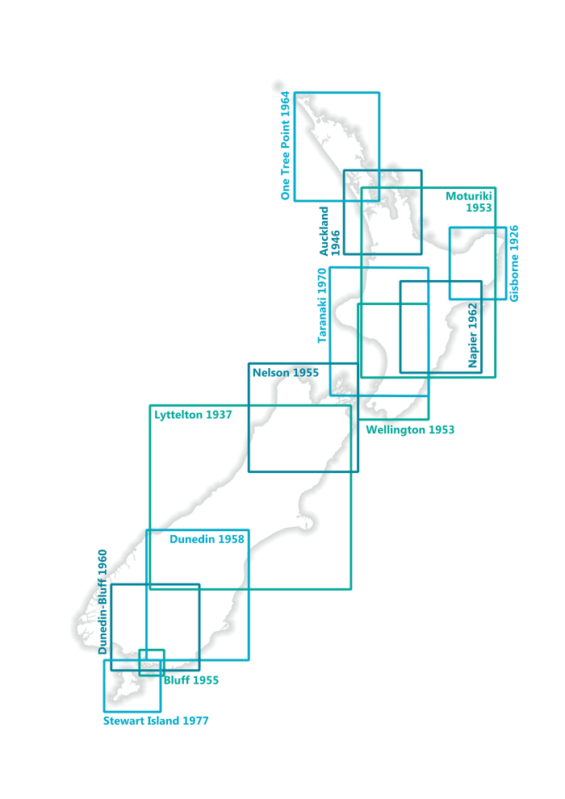
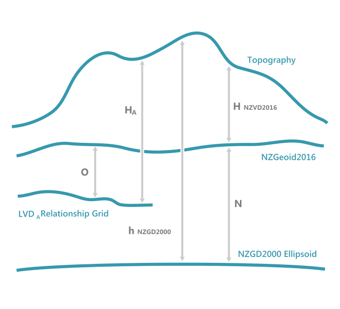

This tutorial first appeared on Land Information New Zealand’s On-Location Blog.
It describes how to use Conda, PDAL, and GDAL to apply a grid shift to point cloud files. It uses PDAL’s readers.las to fetch the data, filters.reprojection to apply the grid shift, and writers.las to write the reprojected point cloud.
The data used in this tutorial is available for free under a CC-BY 4.0 license on Land Information New Zealand’s LINZ Data Service.
The tutorial will be reprojecting point cloud files from:
A New Zealand local vertical datum to the New Zealand Vertical Datum 2016 (NZVD2016).
New Zealand Geodetic Datum 2000 (NZGD2000) to NZVD2016.
Finally, NZVD2016 to NZGD2000 or to a local vertical datum.
Historically in New Zealand, heights were defined in terms of 13 local vertical datums (LVD) referenced to an estimate of the local mean sea level (MSL).

In 2016, New Zealand Vertical Datum 2016 (NZVD2016), which is defined by the NZGeoid2016 geoid, became the official national vertical datum for New Zealand. The general relationship between the different datums is shown in the diagram below.

Available on the LINZ Data Service (LDS) are relationship grids which model the difference between the local vertical datums and NZVD2016 (O in the above diagram).
The NZ Quasigeoid 2016, also a relationship grid, models the difference between the NZGD2000 ellipsoid and NZVD2016 (N in the above diagram).
The equations to transform heights using the published values in the relationship grids are:
We will be using multiple tools to perform the reprojection. To retrieve these tools and have them all accessible in a nice self-contained environment we will be using a system called Conda. Conda is an open source package and environment management system that runs on Windows, macOS, and Linux. Essentially we will create an environment within Conda which will contain the packages we need: PDAL, GDAL and Python.
After installing, open the Anaconda Prompt from your start menu.
When you begin using conda, you already have a default environment named base. We don’t want to put programs into our base environment so we’ll create a separate environment just for doing this reprojection. To do this, type:
condacreate--namevd-reproject
It will check for the additional packages/dependencies that are needed, and will ask if you want to proceed. Say yes.
Proceed ([y]/n)? y
To start to use the new environment and install our required packages within it, we need to activate the environment first:
condaactivatevd-reproject
Note
After the environment is activated the name of the environment appears as (vd-reproject) at the beginning of the command line. This indicates that you’re now inside the environment.
Finally, we need to install the tools/packages we will be using.
condainstall-cconda-forgepdalgdal
When these packages are installed, they will also install the packages they’re dependent on to run. Python is one of these dependent packages, so we won’t need to install it ourselves as conda would’ve already done it for us.
Now that the packages are installed, we are ready to begin.
PDAL allows for the use of PROJ.4 strings to define the spatial reference system of the inputted or outputted data. This is great, because it gives us the ability to use +geoidgrid which is an option to add a grid shift file in the format of NOAA Vdatum’s GTX file format. But where to we get a GTX file from? We have two options:
You can create your own GTX file using the relationship grids available on the LDS. For example, if you intend to convert from Moturiki 1953 to NZVD2016, you have to do the following:
Update the srs details for in_srs, out_srs and a_srs to the EPSG code of the horizontal map projection your source LAS files are in. In the example above we are using New Zealand Transverse Mercator 2000 (EPSG:2193).
Warning
Be aware "forward":"all" under the writers.las section represents the header fields whose values should be preserved from the source LAS file. all will transfer all header fields, including scale and offset values, as well as VLRs. If you desire to transfer only specific header fields, refer to https://pdal.io/stages/writers.las.html for more information about this option.
Below is a python script which executes multiple LAS files. Save to your computer as lvd_to_nzvd2016.py, then open in a text editor and update src_directory, gtxfile, jsonfile, horizontal_srs with the necessary information.
To execute the script, open the Anaconda Prompt, activate the vd-reproject environment and then navigate to where you have saved the script and issue this command:
pythonlvd_to_nzvd2016.py
This script creates a new directory called ‘reprojected’ in the same location as the LAS files. On completion the reprojected LAS files will be located in this directory, ready for your GIS needs.
You can spot check the accuracy of the conversion by using the LINZ Online converter: www.geodesy.linz.govt.nz/concord
The steps to do this reprojection are the same as above except for one change:
In Step 1, for option one, the GTX file required will be nzgeoid2016.gtx. Or, if you are following option two, the relationship grid on the LDS is the NZ Quasigeoid 2016.
Previously, the grid values are being subtracted from the point cloud value in Step 3. To reproject to NZGD2000 or an LVD, the grid values need to be added to the NZVD2016 value.
To accommodate this change in PDAL, you need to alter the following text in the PDAL command from filters.reprojection.out_srs to filters.reprojection.in_srs.